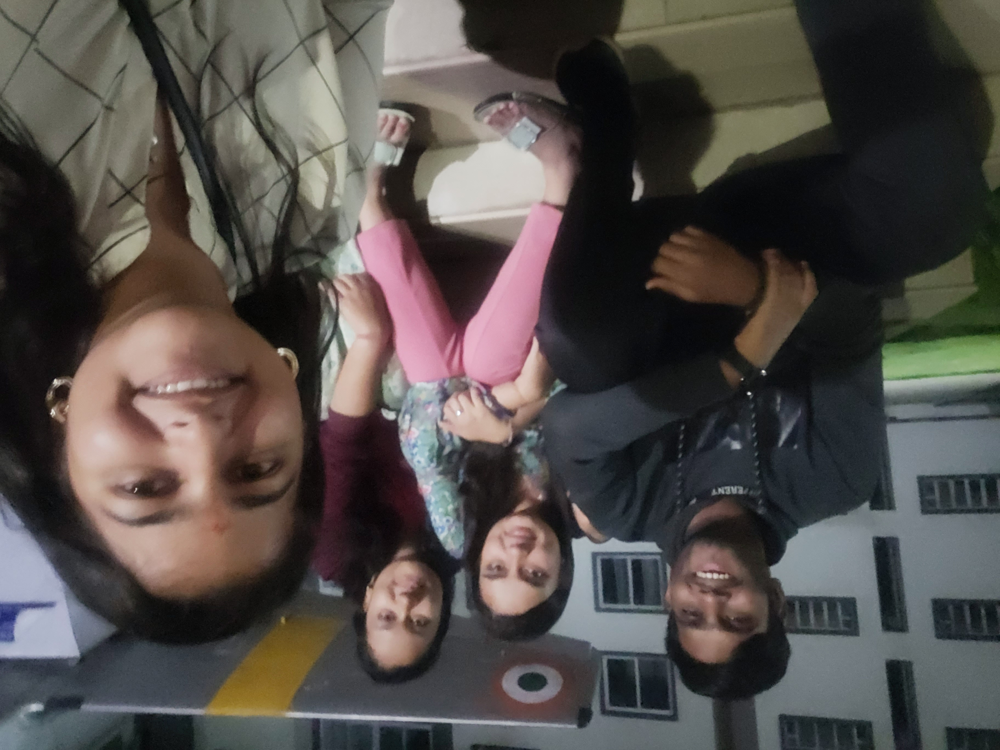
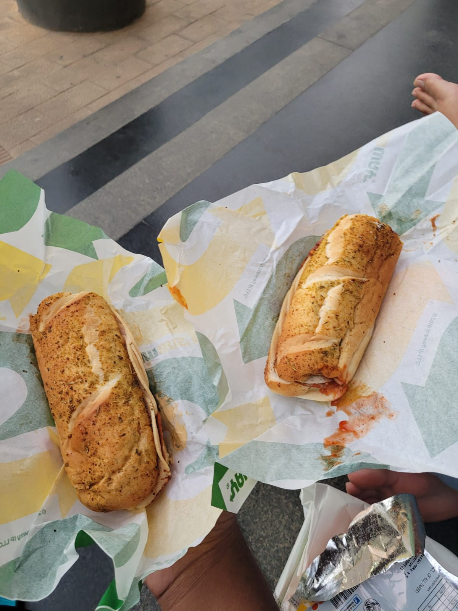

December 2023
We talked for the first time, and for quite a while strolling around the campus. You bared my pointless conversation with my father on random stuff but something was so admiring about you that I just wanted to be more closer to you. Your knowledge about technology, and keen interest on it was something that I didn't saw in any other girl in the entire campus and that just made you more attractive.
January 2024
I clearly remember looking at you and thinking, She is such a wonderful and caring girl. She looks good in traditional, loves eating food, is a non-vegetarian, and to top it all off, she is a tech enthusiast!! I was just flattered, though I didn't tell you at that time, but my subconscious mind was saying, "Go win this girl's heart; she's worth a lot!!". Didn't know what destiny had for both of us...
February 2024
It was your birthday and i didn't expected an invitation, who knew that my wish will ignite some feelings without any expectation. I remember we sat near the plane and took this photo, you tried to come closer to me in hopes of a beautiful bond. I was still bleeding with by my wounds so deep, you wanted to put your hands over them make them healed.

March 2024
I was uncertain about how I felt about all of this, but that one video call made me realize how much I adored your sleeping face. Day by day, it became a habit to sleep by your side, but I feared that I might develop feelings for you, which would only hurt me in the end. So, I decided to stop altogether, hoping to forget everything that had happened. It didn’t end well after all. I wish I hadn’t made you go through all of this at all...
April 2024
Coming back home, I tried my best not to call for our beautiful evening walk, but after your call, I couldn't hold myself back anymore. A part of me wanted to be with you forever, but the memories of the past were holding me back, telling me, 'It’s the same with everyone, Vicky. Don’t fall for her. Stay strong and focus on yourself.' Every second I spent with you, I wanted to be even closer, I still remember you putting your head on my shoulder...
May 2024
It was the fest time, Anadayanta was just around the corner. I was confused about what to wear to impress this smart girl. Her choices were really good, and the dress she wore was fabulous. I didn’t know my first night out would be so magical. Walking on the streets with your hand in mine, I felt on top of the world for the first time. From the train to the bus to our first date, every moment felt magical. Your love and care made me realize that this is the girl I want to be with for a lifetime.
June 2024
We went through a tough time, questioning our choices and wondering what would happen, with our fingers crossed. You stood up for me in front of your mentor, being brave and fearless. It melted my heart to see what you did for me every day. There were times when I disappointed you the most, but the little changes and efforts you made to help me helped us a lot. Your faith, belief, and patience are the reasons I am who I am today.
July 2024
It was my first birthday away from home, but your presence made me forget the absence of my hometown completely. You did everything to put a smile on my face, ordered a beautiful cake, and I got to cut it with my classmates. You've always given me the best of yourself, and I'm so glad to have you in my life every day. The evening on Orion, beside the lake, was so peaceful. Going to the arcade and having ramen with you was one of the most memorable moments of my life, Aaru.
August 2024
It was our SEE examination, and we used to go to the reference library to study. We made so many memories together that I can’t forget them. From learning a subject together to taking breaks when we were tired, it was such a wonderful time studying with you all evening, my dear. From sharing notes and clearing doubts to playing with each other's feet, all these little things were so beautiful. The exams were almost over, but the thought of not being able to talk to you for long scared me the most.
September 2024
We both went back to our homes, and for the first few days, it felt nice. But not being able to see you made my days really hard to get through. Every day, I waited to see your face again, and I realized how much I missed you and had taken you for granted. From video calling each other for a 'project' to giving you and receiving sneaky kisses from you, you took all the risks just to show me your cute, brave, and smart face. All of it made me realize that I should protect a gem like you at any cost.
October 2024
It was the festive month of the year, and it was Pujo away from home. I really enjoyed going pandal hopping with you. I had such a great experience giving Anjali, then going to CTR and having that bene dosa, and walking on the streets of Indira Nagar all the way to Corner House. All of it was so beautiful. Going to Vidhan Soudha and Cubbon Park was so enjoyable that I didn’t want to get up from there. Playing garba with you, laughing together, sitting, and having food with you—everything was so worth it.
November 2024
Our 6th month anniversary was one of the best ones. We sat together the entire day, just with each other. You made such cute and adorable keychains that I’m really proud to flaunt in front of the world because they were made by YOU. Then, sitting on the stairs of the architecture block and having Subway sandwiches and salad with you was so special. But the most beautiful part was connecting on a deeper level and talking about our families. It felt really homely and peaceful.

December 2024
It was a very tough month, as I was ignorant of your emotions and only focused on myself after endless conversations. It got so bad that you had to change my name to make me realize what I had taken for granted. I came to you, tried my best, but it wasn’t enough, as the scars were too deep to be healed quickly. I understood that if I wanted to be with you, I had to think about you too. It wasn’t just me, it was both of us doing our best. Despite your anger, you stood by my side. When I was overwhelmed and emotional, you said, 'I’m here and will always be here with you.' I just can’t thank you enough for everything you've done for me, Aaru.
January 2025
To Be filled by my Beloved, cute lil Puchku